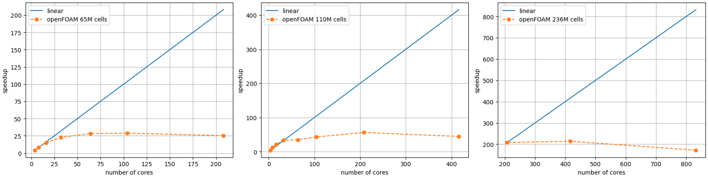
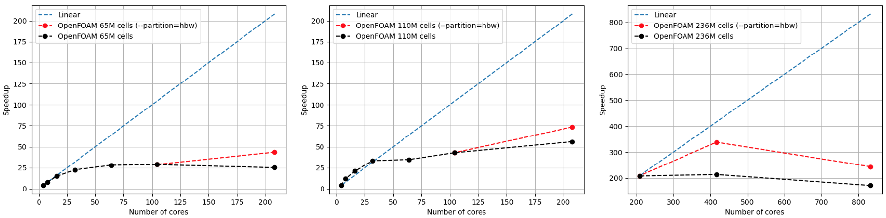
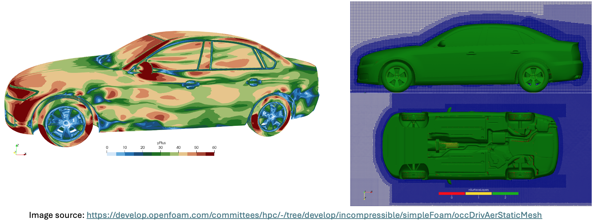

OpenFOAM#
OpenFOAM Installation#
Building OpenFOAM with cray-mpich and gcc#
Instructions for installing OpenFOAM are available here.
In the instructions, you will be cloning the OpenFOAM folder which we will refer to as $OPENFOAM.
In order to build OpenFOAM with cray-mpich, two files need to be edited.
-
$OPENFOAM/etc/bashrcIn this file, the variable
WM_MPLIBwill be defined asMPICH. Search for the line where the variable is exported and replace it withexport WM_MPLIB=MPICH -
$OPENFOAM/etc/config.sh/mpiThis file defines where mpich is defined on the system. You will search for the mpich definition block and replace it with
export MPI_ARCH_PATH=/opt/cray/pe/mpich/8.1.28/ofi/gnu/10.3 export LD_LIBRARY_PATH="${MPI_ARCH_PATH}/lib:${LD_LIBRARY_PATH}" export PATH="${MPI_ARCH_PATH}/bin:${PATH}" export FOAM_MPI=mpich-8.1.28 export MPI_HOME=/opt/cray/pe/mpich/8.1.28/ofi/gnu/10.3 #export FOAM_MPI=mpich2-1.1.1p1 #export MPI_HOME=$WM_THIRD_PARTY_DIR/$FOAM_MPI #export MPI_ARCH_PATH=$WM_THIRD_PARTY_DIR/platforms/$WM_ARCH$WM_COMPILER/$FOAM_MPI _foamAddPath $MPI_ARCH_PATH/bin # 64-bit on OpenSuSE 12.1 uses lib64 others use lib _foamAddLib $MPI_ARCH_PATH/lib$WM_COMPILER_LIB_ARCH _foamAddLib $MPI_ARCH_PATH/lib _foamAddMan $MPI_ARCH_PATH/share/man ;;
Before you install OpenFOAM, make sure to load Prgenv-gnu.
This will load gcc and cray-mpich.
Make sure the same module is loaded at runtime.
Running OpenFOAM cases using Modules#
There are several modules for builds of OpenFOAM. After logging in to a CPU node on Kestrel, please use the module avail command to view available versions.
CPU $ module avail openfoam
----------------------------- /nopt/nrel/apps/cpu_stack/modules/default/application -----------------------------
openfoam/v2306-openmpi-gcc openfoam/9-craympich (D) openfoam/11-craympich
openfoam/v2406-craympich-gcc openfoam/9-ompi openfoam/12-intelmpi
Sample job script: Kestrel
#!/bin/bash
#SBATCH --job-name=myOpenFOAMjob
#SBATCH --account=<your-account-name>
#SBATCH --output=foamOutputLog.out
#SBATCH --error=foamErrorLog.out
#SBATCH --mail-user=<yourEmailAddress>@nlr.gov
#SBATCH --nodes=2
#SBATCH --partition=hbw
#SBATCH --ntasks-per-node=104 # set number of MPI ranks per node
#SBATCH --time=04:00:00
module load openfoam/<version>
decomposePar
srun -n 200 --cpu-bind=v,rank_ldom rhoReactingBuoyantFoam -parallel >> log.h2
reconstructPar -time 0:5000 -fields '(H2 X_H2)'
Installing additional OpenFOAM packages#
Additional packages built on top of the OpenFOAM API can be installed after loading a compatible module. As an example, we show the process to install the OpenFuelCell2 package.
# Download or clone the required package
$ git clone https://github.com/openFuelCell2/openFuelCell2.git
$ cd openFuelCell2
# Request an interactive node for compiling in parallel
$ salloc --account=<your-account-name> --time=00:30:00 --nodes=1 --ntasks-per-core=1 --ntasks-per-node=104 --cpus-per-task=1 --partition=debug
# Load the module compatible with your package
$ module load openfoam/v2306-openmpi-gcc
# Compile the application with the official instructions from the developers, e.g.
$ cd src
$ ./Allwmake -j -prefix=${PWD}
# Test
$ cd ../run/SOFC/
$ make mesh
$ export NPROCS=4
$ make decompose
$ make parallel
$ make run
Benchmarks#
OpenFOAM v2412 compiled with cray-mpich has been used to perform strong scaling tests of the DrivAer automobile model on Kestrel. The results are shown below for three levels of mesh resolution. For this particular setup, the application has shown to scale poorly beyond 2 nodes. However, for jobs requiring more than 1 node, using high bandwith nodes with #SBATCH --partition=hbw in your job script might yield better performance. Since the behaviour is consistent with some user reports about their own setups, we encourage users to switch to newer versions and perform strong & weak scaling tests on their own before submitting a new large job.



OpenFOAM on Kestrel (RHEL 9)#
On Kestrel's RHEL 9 CPU nodes, module avail openfoam shows a different set of
modules built against the RHEL 9 software stack:
CPU $ module avail openfoam
-------------------------- [ Research Applications ] --------------------------
openfoam/v2512-craympich-gcc openfoam/13-craympich (D)
openfoam/v2512-openmpi-gcc
Three modules are available on RHEL 9. All are built with GCC 14.2.0 and place
the OpenFOAM solvers and utilities (simpleFoam, blockMesh, decomposePar,
reconstructPar, ...) on PATH, and set $WM_PROJECT_DIR,
$WM_PROJECT_VERSION, $FOAM_MPI, and $WM_MPLIB.
| Module | Distribution / version | MPI (FOAM_MPI / WM_MPLIB) |
Parallel launch |
|---|---|---|---|
openfoam/13-craympich (D) |
OpenFOAM.org 13 | mpich-8.1.32 / MPICH |
srun |
openfoam/v2512-craympich-gcc |
OpenFOAM.com v2512 | cray-mpich / CRAY-MPICH |
srun --mpi=cray_shasta |
openfoam/v2512-openmpi-gcc |
OpenFOAM.com v2512 | sys-openmpi / SYSTEMOPENMPI (OpenMPI 5.0.3) |
mpirun (not srun) |
openfoam/13-craympich is the default (D). For the OpenFOAM.com v2512
release, choose the Cray MPICH build for best interconnect performance, or the
OpenMPI build if your workflow requires OpenMPI. All three modules
conflict with one another, so load only one at a time.
module load openfoam/v2512-craympich-gcc
Solver names differ between distributions
openfoam/13-craympich is the OpenFOAM Foundation (.org) release and uses
the modular foamRun -solver <name> driver. The v2512 modules are the
OpenFOAM.com (ESI) release and use the classic dedicated solver executables
(simpleFoam, pimpleFoam, rhoReactingBuoyantFoam, ...) — there is no
foamRun in the v2512 builds.
RHEL 9 CPU nodes have 104 logical cores each. Cray MPICH has no mpirun —
launch Cray MPICH builds with srun --mpi=cray_shasta; launch the OpenMPI
build with mpirun.
Prefer the Cray MPICH build for multi-node runs
In the maintainer's pitzDaily smoke test (32 ranks across 4 nodes), the
Cray MPICH build ran in ~1.8 s vs ~19.8 s for the OpenMPI build
(~11× faster). Spack OpenMPI falls back to TCP transport on Slingshot,
whereas Cray MPICH uses the OFI/Slingshot fabric natively. Use the OpenMPI
build only if your workflow requires OpenMPI-specific mpirun features.
Sample job script: Kestrel (RHEL 9) — Cray MPICH
#!/bin/bash
#SBATCH --job-name=myOpenFOAMjob
#SBATCH --account=<your-account-name>
#SBATCH --output=foamOutputLog.out
#SBATCH --error=foamErrorLog.out
#SBATCH --nodes=4
#SBATCH --ntasks-per-node=104
#SBATCH --time=04:00:00
#SBATCH --mem=220G
module load openfoam/v2512-craympich-gcc
cd $SLURM_SUBMIT_DIR
NRANKS=$SLURM_NTASKS # 4 x 104 = 416
blockMesh
foamDictionary -entry numberOfSubdomains -set $NRANKS system/decomposeParDict
foamDictionary -entry method -set scotch system/decomposeParDict
decomposePar -force
srun --mpi=cray_shasta --cpu-bind=cores simpleFoam -parallel
reconstructPar -latestTime
For the default openfoam/13-craympich module, load it instead and launch
with plain srun (no --mpi=cray_shasta required, though it is supported).
OpenFOAM 13 uses the modular driver, so replace the solver line with, e.g.:
module load openfoam/13-craympich
srun --cpu-bind=cores foamRun -parallel
Sample job script: Kestrel (RHEL 9) — OpenMPI
The OpenMPI build has no PMIx, so srun will not launch it correctly
(each rank reports world size = 1) — use mpirun. For multi-node runs the
OpenFOAM WM_*/FOAM_* environment must be forwarded to remote ranks with
-x, otherwise the ranks cannot find OpenFOAM's libraries.
#!/bin/bash
#SBATCH --job-name=myOpenFOAMjob
#SBATCH --account=<your-account-name>
#SBATCH --output=foamOutputLog.out
#SBATCH --error=foamErrorLog.out
#SBATCH --nodes=4
#SBATCH --ntasks-per-node=104
#SBATCH --time=04:00:00
#SBATCH --mem=220G
module load openfoam/v2512-openmpi-gcc
cd $SLURM_SUBMIT_DIR
NRANKS=$SLURM_NTASKS # 4 x 104 = 416
blockMesh
foamDictionary -entry numberOfSubdomains -set $NRANKS system/decomposeParDict
foamDictionary -entry method -set scotch system/decomposeParDict
decomposePar -force
mpirun -np $NRANKS \
--map-by ppr:$SLURM_NTASKS_PER_NODE:node \
-x PATH -x LD_LIBRARY_PATH \
-x WM_PROJECT_DIR -x WM_OPTIONS \
-x FOAM_LIBBIN -x FOAM_APPBIN \
-x FOAM_USER_LIBBIN -x FOAM_USER_APPBIN \
-x WM_PROJECT_USER_DIR \
simpleFoam -parallel
reconstructPar -latestTime
On first contact with the Slingshot network you may see a benign
Open MPI failed an OFI Libfabric library call (fi_domain) warning; OpenMPI
falls back to a working transport and the run proceeds. It can be ignored.
Case must be on a shared filesystem
For multi-node runs, every rank reads/writes the decomposed processor*/
directories, so the case directory must live on a shared filesystem
(/scratch/$USER/... or /projects/<project>/...), not /tmp.
Make sure the same module is loaded at runtime as was used to prepare the case,
and that the number of MPI ranks matches numberOfSubdomains in
system/decomposeParDict. Each v2512 module prints the path to its own
README.md on load, which contains the full run instructions, srun/mpirun
tuning knobs, and the validated benchmark configuration:
- Cray MPICH:
/nopt/nlr/apps/kestrel-cpu/software/openfoam/openfoam_v2512/openfoam_v2512_craympich/README.md - OpenMPI:
/nopt/nlr/apps/kestrel-cpu/software/openfoam/openfoam_v2512/openfoam_v2512_openmpi/README.md
OpenFOAM on Gila#
Two versions are available on Gila. OpenFOAM 11 is the default.
$ module load application
$ module avail openfoam
-------- [ Research Applications ] --------
openfoam/11-gcc (D) openfoam/13-gcc
Where:
D: Default Module
Load the module:
module load application
module load openfoam/13-gcc
Running on Gila#
Use mpirun, not srun, on Gila
There is a PMIx version mismatch between the OpenFOAM OpenMPI build and the
SLURM version on Gila. Jobs launched with srun will hang or fail.
Use mpirun as shown in the example below.
OpenMPI does not forward the shell environment to remote ranks. Without an
explicit source step on each rank, remote processes cannot find OpenFOAM's
shared libraries. Wrap every solver call with bash -c "source ...":
OF_BASHRC=/nopt/nrel/apps/software/openfoam/13/OpenFOAM-13/etc/bashrc
mpirun -np $SLURM_NTASKS \
bash -c "source $OF_BASHRC && foamRun -parallel"
Sample batch script#
OpenFOAM 13 — sbatch script (Gila)
#!/bin/bash
#SBATCH --job-name=of13_run
#SBATCH --nodes=2
#SBATCH --ntasks-per-node=60
#SBATCH --mem=200G
#SBATCH --partition=amd
#SBATCH --account=<your_account>
#SBATCH --time=4:00:00
module load application
module load openfoam/13-gcc
OF_BASHRC=/nopt/nrel/apps/software/openfoam/13/OpenFOAM-13/etc/bashrc
decomposePar
mpirun -np $SLURM_NTASKS \
bash -c "source $OF_BASHRC && foamRun -parallel"
reconstructPar
Scaling test#
A ready-to-run benchmark (1.62M-cell LES channel flow, 50 steps) is placed at
/nopt/nrel/apps/software/openfoam/13/scaling_test/.
# 1. Copy to your work area
cp -r /nopt/nrel/apps/software/openfoam/13/scaling_test ~/my_scaling_test
cd ~/my_scaling_test
# 2. Request an interactive allocation (adjust account and NP as needed)
salloc -A <your_account> -t 01:00:00 --nodes=2 --ntasks-per-node=60 \
--mem=200G --partition=amd
# 3. SSH into a compute node to get the full SLURM environment
srun --pty bash
# 4. Load modules and run
module load application && module load openfoam/13-gcc
./run_scaling_test.sh 32 # pass NP; defaults to $SLURM_NTASKS
The script runs blockMesh, decomposePar, and foamRun automatically and
prints an execution-time summary. A sbatch_scaling_sweep.sh template is
included for sweeping across multiple rank counts.
Scaling results measured on 2 × AMD EPYC nodes (amd partition):
| NP | ExecutionTime (s) | Speedup | Cells/rank |
|---|---|---|---|
| 4 | 137.3 | 1.00× | 405,000 |
| 8 | 84.2 | 1.63× | 202,500 |
| 16 | 69.0 | 2.00× | 101,250 |
| 32 (2 nodes) | 80.9 | 1.65× | 50,625 |
| 32 (1 node) | 20.5 | 6.69× | 50,625 |
NP=16 is the sweet spot for this 1.62M-cell mesh. The cross-node NP=32 case regresses because 50k cells/rank is too small for inter-node MPI overhead to pay off. Single-node NP=32 is ~4× faster than cross-node NP=32, confirming the cell-count-per-rank guidance below.
| Cells/rank | Expected behaviour |
|---|---|
| > 500,000 | Under-utilised — use more ranks |
| 100,000–500,000 | Good (70–90% efficiency) |
| 50,000–100,000 | Moderate (40–70%) |
| < 50,000 | MPI overhead dominates |